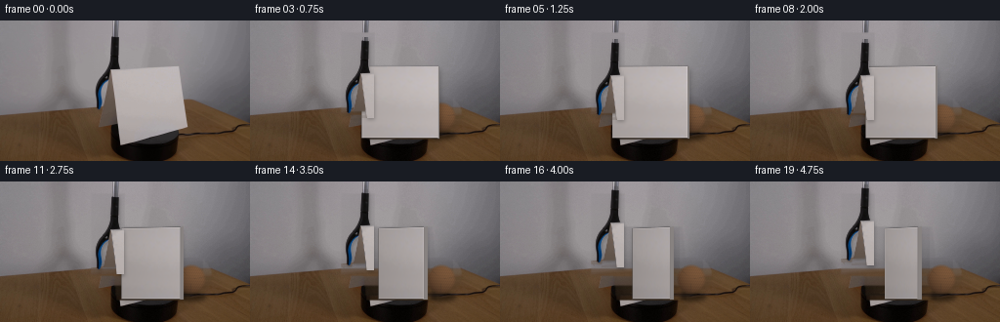
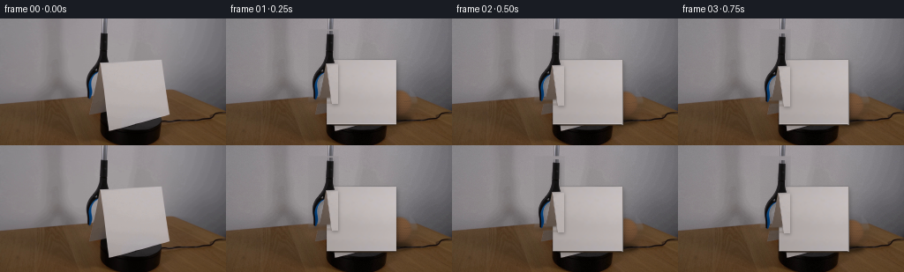
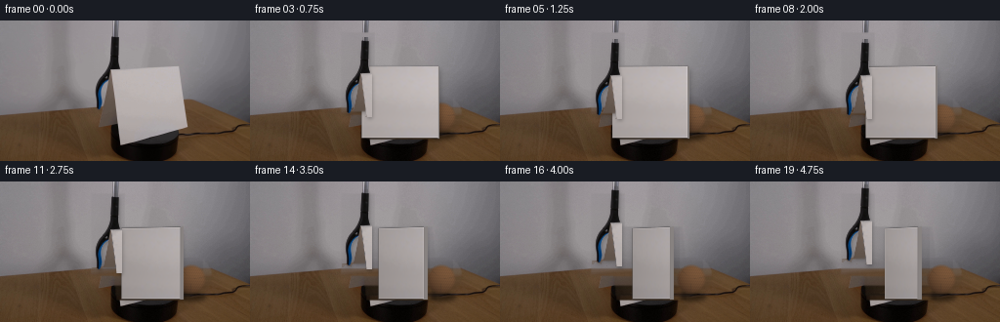
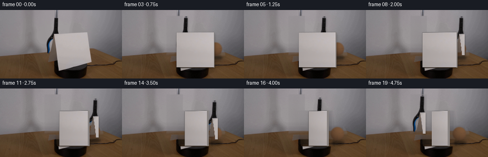
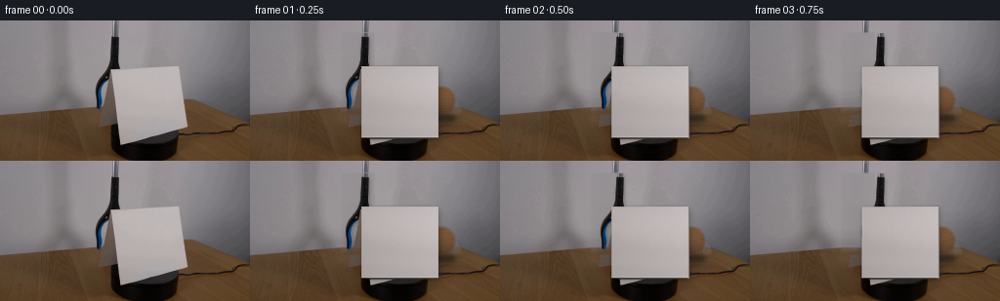

← 本轮 smoke 总览traex/DeepSeek-V4.1-Flash · 0004
text · 256×144 · 4.0 FPS · 20 帧 · 状态 complete · 输出 tokens 50397
原始任务Static locked-off single-shot with fixed frame throughout filmed with constant framerate in real-time. The scene shows a realistic scientific demonstration. The scene only contains the described setup and actions. The blue-black grabber tool held the tennis ball above the cardstock and lowered it behind the cardstock. The cardstock sits on the black platform on top of a wooden table. The blue-black grabber tool places the orange tennis ball behind the clockwise-rotating cardstock on the table.
当前保存结果
已保存候选与代码修改
这里按时间展示外部捕获的候选，每份均可单独播放。保存新版本不等于完成视觉检查；下方工具证据记录实际看过的图。
候选 01 · 2026-11-08T18:51:55.231559+00:00 · 点开播放与检查图
inspection.png

transition_check.png

代码变化
--- 上一保存版本
+++ 本次保存版本
@@ -0,0 +1,354 @@
+from pathlib import Path
+
+import cv2
+import numpy as np
+from PIL import Image
+
+import artifact_io
+
+
+ROOT = Path(__file__).resolve().parent
+W, H = 256, 144
+N, FPS = 20, 4
+
+CARD_POLY = np.array(
+ [[112.0, 47.0], [185.0, 47.0], [193.0, 120.0], [120.0, 120.0]],
+ dtype=np.float32,
+)
+CARD_CX = 153.0
+CARD_TOP = 47.0
+CARD_BOTTOM = 119.5
+CARD_W = 78.0
+
+
+def _ease(t: float) -> float:
+ t = float(np.clip(t, 0.0, 1.0))
+ return t * t * (3.0 - 2.0 * t)
+
+
+def _smooth_mask(mask: np.ndarray, sigma: float = 0.65) -> np.ndarray:
+ return cv2.GaussianBlur(mask.astype(np.float32), (0, 0), sigma)
+
+
+def _row_fill(image: np.ndarray, mask: np.ndarray) -> np.ndarray:
+ """Fill a mask by interpolating each scanline between visible pixels."""
+ out = image.astype(np.float32).copy()
+ xs = np.arange(W, dtype=np.float32)
+ for y in range(H):
+ known = ~mask[y]
+ if known.sum() < 2:
+ continue
+ xk = xs[known]
+ for channel in range(3):
+ out[y, :, channel] = np.interp(
+ xs, xk, image[y, known, channel].astype(np.float32)
+ )
+
+ # Carry the fine surface texture from nearby, unmasked pixels. This keeps
+ # the tabletop grain and the soft wall mottling from becoming synthetic.
+ texture = np.zeros_like(out)
+ for shift in (-48, 48, -72, 72):
+ shifted = np.roll(image.astype(np.float32), shift, axis=1)
+ shifted_mask = np.roll(mask, shift, axis=1)
+ valid = (~shifted_mask) & mask
+ texture[valid] += shifted[valid] - out[valid]
+ texture /= 4.0
+ out[mask] += 0.55 * texture[mask]
+ return np.clip(out, 0, 255)
+
+
+def build_plate(source: np.ndarray) -> tuple[np.ndarray, np.ndarray]:
+ """Reconstruct the static set behind the card, ball, and gripper."""
+ mask = np.zeros((H, W), dtype=np.uint8)
+ card = np.round(CARD_POLY).astype(np.int32)
+ cv2.fillPoly(mask, [card], 255)
+ cv2.ellipse(mask, (196, 96), (19, 18), 0, 0, 360, 255, -1)
+ tool = np.array(
+ [[94, 13], [126, 13], [126, 95], [94, 95]], dtype=np.int32
+ )
+ cv2.fillPoly(mask, [tool], 255)
+ mask = cv2.dilate(mask, np.ones((3, 3), np.uint8), iterations=1)
+
+ filled = _row_fill(source, mask > 0)
+ filled = cv2.GaussianBlur(filled, (0, 0), 0.55)
+ plate = source.astype(np.float32).copy()
+ feather = _smooth_mask(mask.astype(np.float32) / 255.0, 0.8)[..., None]
+ plate = plate * (1.0 - feather) + filled * feather
+ return np.clip(plate, 0, 255), mask
+
+
+def extract_card_texture(source: np.ndarray) -> np.ndarray:
+ """Use the clean central portion of the real card as its paper texture."""
+ clean = source[52:108, 127:180].astype(np.float32)
+ texture = cv2.resize(clean, (78, 72), interpolation=cv2.INTER_CUBIC)
+ # Suppress any residual compression blocks while retaining paper grain.
+ smooth = cv2.GaussianBlur(texture, (0, 0), 1.0)
+ texture = smooth + 0.48 * (texture - smooth)
+ yy = np.linspace(-1.0, 1.0, 72, dtype=np.float32)[:, None, None]
+ xx = np.linspace(-1.0, 1.0, 78, dtype=np.float32)[None, :, None]
+ texture += (1.8 * xx - 0.7 * yy)
+ return np.clip(texture, 0, 255)
+
+
+def extract_gripper(source: np.ndarray, plate: np.ndarray):
+ x0, y0, x1, y1 = 93, 13, 127, 96
+ src = source[y0:y1, x0:x1].astype(np.float32)
+ bg = plate[y0:y1, x0:x1].astype(np.float32)
+ src_lum = src @ np.array([0.2126, 0.7152, 0.0722], dtype=np.float32)
+ bg_lum = bg @ np.array([0.2126, 0.7152, 0.0722], dtype=np.float32)
+ color_dist = np.linalg.norm(src - bg, axis=2)
+ darkness = np.clip((bg_lum - src_lum) / 42.0, 0.0, 1.0)
+ blueness = np.clip((src[..., 2] - src[..., 0] - 8.0) / 34.0, 0.0, 1.0)
+ alpha = np.maximum.reduce(
+ [darkness, blueness, np.clip((color_dist - 10.0) / 58.0, 0.0, 1.0)]
+ )
+ alpha = cv2.GaussianBlur(alpha, (0, 0), 0.42)
+ alpha = np.clip(alpha, 0.0, 1.0)
+ # Keep the narrow handle and jaw connected, but do not retain wall pixels.
+ alpha[alpha < 0.12] = 0.0
+ return src, alpha
+
+
+def _card_quad(theta: float) -> np.ndarray:
+ width = CARD_W * np.cos(np.deg2rad(theta))
+ center_shift = 1.6 * np.sin(np.deg2rad(theta))
+ cx = CARD_CX + center_shift
+ top_lift = 1.2 * np.sin(np.deg2rad(theta))
+ return np.array(
+ [
+ [cx - width / 2.0, CARD_TOP + top_lift],
+ [cx + width / 2.0, CARD_TOP - 0.45 * top_lift],
+ [cx + width / 2.0, CARD_BOTTOM],
+ [cx - width / 2.0, CARD_BOTTOM],
+ ],
+ dtype=np.float32,
+ )
+
+
+def _warp_texture(
+ texture: np.ndarray, quad: np.ndarray, brightness: float
+) -> tuple[np.ndarray, np.ndarray]:
+ th, tw = texture.shape[:2]
+ src_quad = np.array(
+ [[0, 0], [tw - 1, 0], [tw - 1, th - 1], [0, th - 1]], dtype=np.float32
+ )
+ matrix = cv2.getPerspectiveTransform(src_quad, quad)
+ warped = cv2.warpPerspective(
+ texture,
+ matrix,
+ (W, H),
+ flags=cv2.INTER_CUBIC,
+ borderMode=cv2.BORDER_CONSTANT,
+ borderValue=(0, 0, 0),
+ )
+ mask = cv2.warpPerspective(
+ np.ones((th, tw), dtype=np.float32),
+ matrix,
+ (W, H),
+ flags=cv2.INTER_LINEAR,
+ borderMode=cv2.BORDER_CONSTANT,
+ borderValue=0,
+ )
+ warped *= brightness
+ return warped, np.clip(mask, 0.0, 1.0)
+
+
+def render_ball(
+ canvas: np.ndarray, center: tuple[float, float], radius: float = 15.5
+) -> None:
+ """Render a low-light, fuzzy orange tennis ball with a soft contact shadow."""
+ cx, cy = center
+ x0, x1 = int(cx - 22), int(cx + 23)
+ y0, y1 = int(cy - 22), int(cy + 23)
+ x0, x1 = max(0, x0), min(W, x1)
+ y0, y1 = max(0, y0), min(H, y1)
+
+ # Contact shadow on the wooden surface.
+ shadow = np.zeros((H, W), dtype=np.float32)
+ cv2.ellipse(
+ shadow,
+ (int(round(cx + 1.0)), int(round(cy + radius + 3.0))),
+ (int(radius * 0.95), 4),
+ 0,
+ 0,
+ 360,
+ 0.42,
+ -1,
+ )
+ shadow = cv2.GaussianBlur(shadow, (0, 0), 2.1)
+ canvas *= 1.0 - shadow[..., None]
+
+ yy, xx = np.mgrid[y0:y1, x0:x1].astype(np.float32)
+ nx = (xx + 0.5 - cx) / radius
+ ny = (yy + 0.5 - cy) / radius
+ rr = np.sqrt(nx * nx + ny * ny)
+ edge_noise = (
+ np.sin(xx * 2.37 + yy * 1.31)
+ + 0.55 * np.sin(xx * 5.11 - yy * 3.07)
+ ) * 0.012
+ alpha = np.clip((1.0 - rr + edge_noise) * 5.0, 0.0, 1.0)
+ alpha *= np.clip((1.0 - rr) / 0.08 + 0.45, 0.0, 1.0)
+
+ nz = np.sqrt(np.clip(1.0 - nx * nx - ny * ny, 0.0, 1.0))
+ light = np.clip(0.24 + 0.78 * (0.45 * nx - 0.60 * ny + 0.78 * nz), 0.0, 1.15)
+ base = np.array([116.0, 82.0, 55.0], dtype=np.float32)
+ shadow_color = np.array([72.0, 49.0, 33.0], dtype=np.float32)
+ color = shadow_color + (base - shadow_color) * light[..., None]
+ felt = (
+ 2.8 * np.sin(xx * 2.9 + yy * 1.7)
+ + 1.8 * np.sin(xx * 6.2 - yy * 4.1)
+ )
+ color += felt[..., None] * np.array([1.0, 0.72, 0.43], dtype=np.float32)
+
+ # A restrained tennis seam, visible only where the low key light reaches it.
+ angle = np.arctan2(ny, nx)
+ seam = np.abs(np.sin(1.55 * angle + 0.42) - 0.18)
+ seam_line = np.exp(-((seam / 0.075) ** 2)) * (rr < 0.94) * (nz > 0.25)
+ color = color * (1.0 - 0.14 * seam_line[..., None])
+ color += 5.5 * seam_line[..., None]
+
+ patch = canvas[y0:y1, x0:x1]
+ a = alpha[..., None]
+ patch[:] = patch * (1.0 - a) + color * a
+
+
+def composite_card(
+ canvas: np.ndarray,
+ texture: np.ndarray,
+ theta: float,
+) -> None:
+ quad = _card_quad(theta)
+ # Moving, soft shadow on the tabletop.
+ shadow_quad = quad + np.array([[2.0, 2.8]], dtype=np.float32)
+ shadow_mask = np.zeros((H, W), dtype=np.uint8)
+ cv2.fillConvexPoly(shadow_mask, np.round(shadow_quad).astype(np.int32), 255)
+ shadow_mask = cv2.GaussianBlur(shadow_mask.astype(np.float32) / 255.0, (0, 0), 2.8)
+ canvas *= 1.0 - 0.24 * shadow_mask[..., None]
+
+ phase = np.deg2rad(theta)
+ brightness = 1.0 - 0.13 * np.sin(phase) - 0.025 * np.sin(phase) ** 2
+ face, face_mask = _warp_texture(texture, quad, brightness)
+
+ # A directional surface gradient makes the turn read as a rotation rather
+ # than a simple horizontal squeeze.
+ yy, xx = np.mgrid[0:H, 0:W].astype(np.float32)
+ xlo, xhi = quad[:, 0].min(), quad[:, 0].max()
+ u = np.clip((xx - xlo) / max(xhi - xlo, 1.0), 0.0, 1.0)
+ gradient = 0.965 + 0.065 * u + 0.012 * np.sin(yy * 0.12)
+ face *= gradient[..., None]
+
+ # Visible cardstock thickness on the receding side.
+ thickness = 0.8 + 3.2 * np.sin(phase)
+ if thickness > 0.9:
+ right_top = quad[1]
+ right_bottom = quad[2]
+ side_quad = np.array(
+ [
+ right_top,
+ right_top + np.array([thickness, -0.3], dtype=np.float32),
+ right_bottom + np.array([thickness, 0.5], dtype=np.float32),
+ right_bottom,
+ ],
+ dtype=np.float32,
+ )
+ side_mask = np.zeros((H, W), dtype=np.uint8)
+ cv2.fillConvexPoly(side_mask, np.round(side_quad).astype(np.int32), 255)
+ side_mask_f = cv2.GaussianBlur(
+ side_mask.astype(np.float32) / 255.0, (0, 0), 0.42
+ )
+ side_color = np.empty((H, W, 3), dtype=np.float32)
+ side_color[:] = np.array([147.0, 141.0, 139.0], dtype=np.float32)
+ side_color *= (0.82 + 0.10 * u)[..., None]
+ canvas[:] = (
+ canvas * (1.0 - side_mask_f[..., None])
+ + side_color * side_mask_f[..., None]
+ )
+
+ face_mask = _smooth_mask(face_mask, 0.38)
+ # A thin edge line gives the paper a crisp silhouette at this resolution.
+ edge = np.zeros((H, W), dtype=np.uint8)
+ cv2.polylines(edge, [np.round(quad).astype(np.int32)], True, 255, 1)
+ edge_f = cv2.GaussianBlur(edge.astype(np.float32) / 255.0, (0, 0), 0.35)
+ canvas[:] = canvas * (1.0 - face_mask[..., None]) + face * face_mask[..., None]
+ canvas[:] = canvas * (1.0 - 0.16 * edge_f[..., None]) + np.array(
+ [164.0, 158.0, 156.0], dtype=np.float32
+ ) * (0.16 * edge_f[..., None])
+
+
+def composite_gripper(
+ canvas: np.ndarray,
+ tool_rgb: np.ndarray,
+ tool_alpha: np.ndarray,
+ offset_y: int,
+) -> None:
+ h, w = tool_alpha.shape
+ x0, y0 = 93, 13 + offset_y
+ x1, y1 = x0 + w, y0 + h
+ if y0 >= H or y1 <= 0:
+ return
+ sx0, sy0 = max(0, -x0), max(0, -y0)
+ dx0, dy0 = max(0, x0), max(0, y0)
+ dx1, dy1 = min(W, x1), min(H, y1)
+ if dx1 <= dx0 or dy1 <= dy0:
+ return
+ sx1 = sx0 + (dx1 - dx0)
+ sy1 = sy0 + (dy1 - dy0)
+ rgb = tool_rgb[sy0:sy1, sx0:sx1]
+ alpha = tool_alpha[sy0:sy1, sx0:sx1]
+
+ # The tool casts a faint moving shadow on the wall and card.
+ shadow = np.zeros((H, W), dtype=np.float32)
+ shadow[dy0 + 2 : dy1 + 2, dx0 + 1 : dx1 + 1] = alpha
+ shadow = cv2.GaussianBlur(shadow, (0, 0), 1.8)
+ canvas *= 1.0 - 0.22 * shadow[..., None]
+
+ patch = canvas[dy0:dy1, dx0:dx1]
+ a = alpha[..., None]
+ patch[:] = patch * (1.0 - a) + rgb * a
+
+
+def make_frames(source: np.ndarray) -> np.ndarray:
+ plate, _ = build_plate(source)
+ texture = extract_card_texture(source)
+ tool_rgb, tool_alpha = extract_gripper(source, plate)
+ rng = np.random.default_rng(1701)
+
+ frames = np.empty((N, H, W, 3), dtype=np.uint8)
+ frames[0] = source
+ for index in range(1, N):
+ t = index / (N - 1)
+ theta = 65.0 * _ease(t)
+ ball_y = 95.0 + 5.0 * _ease(min(t * 4.2, 1.0))
+ if index < 10:
+ tool_offset = int(round(6.0 * _ease(index / 4.5)))
+ else:
+ tool_offset = int(round(-10.0 * _ease((index - 9) / 10.0)))
+
+ canvas = plate.copy()
+ # Subtle sensor grain, varied at 4 fps but never enough to hide edges.
+ grain = rng.normal(0.0, 0.72, size=(H, W, 1)).astype(np.float32)
+ canvas = np.clip(canvas + grain, 0, 255)
+
+ render_ball(canvas, (196.0, ball_y))
+ composite_card(canvas, texture, theta)
+ composite_gripper(canvas, tool_rgb, tool_alpha, tool_offset)
+
+ # Gentle highlight falloff in the bottom corners keeps the fixed camera
+ # from feeling mathematically flat.
+ yy, xx = np.mgrid[0:H, 0:W].astype(np.float32)
+ vignette = 1.0 - 0.025 * (
+ (xx - W / 2.0) ** 2 / (W * W) + (yy - H / 2.0) ** 2 / (H * H)
+ )
+ canvas *= vignette[..., None]
+ frames[index] = np.uint8(np.clip(canvas + 0.5, 0, 255))
+ return frames
+
+
+def main() -> None:
+ source = np.array(Image.open(ROOT / "first_frame.png").convert("RGB"))
+ frames = make_frames(source)
+ artifact_io.save(frames, ROOT)
+
+
+if __name__ == "__main__":
+ main()
候选 02 · 2026-11-08T18:52:58.632265+00:00 · 点开播放与检查图
inspection.png

transition_check.png

代码变化
--- 上一保存版本
+++ 本次保存版本
@@ -79,7 +79,15 @@
def extract_card_texture(source: np.ndarray) -> np.ndarray:
"""Use the clean central portion of the real card as its paper texture."""
- clean = source[52:108, 127:180].astype(np.float32)
+ clean = source[52:108, 127:179].astype(np.float32)
+ # The leftmost columns graze the gripper and the rightmost carry the card
+ # edge. Rebuild those narrow strips from clean paper before enlarging.
+ for col in list(range(2)) + list(range(clean.shape[1] - 2, clean.shape[1])):
+ source_col = 4 if col < 2 else clean.shape[1] - 5
+ clean[:, col] = (
+ 0.72 * clean[:, source_col]
+ + 0.28 * clean[:, min(clean.shape[1] - 1, max(0, source_col - 1))]
+ )
texture = cv2.resize(clean, (78, 72), interpolation=cv2.INTER_CUBIC)
# Suppress any residual compression blocks while retaining paper grain.
smooth = cv2.GaussianBlur(texture, (0, 0), 1.0)
@@ -91,7 +99,7 @@
def extract_gripper(source: np.ndarray, plate: np.ndarray):
- x0, y0, x1, y1 = 93, 13, 127, 96
+ x0, y0, x1, y1 = 94, 13, 125, 95
src = source[y0:y1, x0:x1].astype(np.float32)
bg = plate[y0:y1, x0:x1].astype(np.float32)
src_lum = src @ np.array([0.2126, 0.7152, 0.0722], dtype=np.float32)
@@ -105,7 +113,9 @@
alpha = cv2.GaussianBlur(alpha, (0, 0), 0.42)
alpha = np.clip(alpha, 0.0, 1.0)
# Keep the narrow handle and jaw connected, but do not retain wall pixels.
- alpha[alpha < 0.12] = 0.0
+ alpha[alpha < 0.24] = 0.0
+ alpha = cv2.GaussianBlur(alpha, (0, 0), 0.32)
+ alpha[alpha < 0.10] = 0.0
return src, alpha
@@ -282,7 +292,7 @@
offset_y: int,
) -> None:
h, w = tool_alpha.shape
- x0, y0 = 93, 13 + offset_y
+ x0, y0 = 94, 13 + offset_y
x1, y1 = x0 + w, y0 + h
if y0 >= H or y1 <= 0:
return
候选 03 · 2026-11-08T18:53:00.700554+00:00 · 点开播放与检查图
inspection.png

transition_check.png
代码变化
代码未变化；重新保存了产物。
候选 04 · 2026-11-08T18:53:34.985693+00:00 · 点开播放与检查图
inspection.png

transition_check.png

代码变化
--- 上一保存版本
+++ 本次保存版本
@@ -236,7 +236,7 @@
canvas *= 1.0 - 0.24 * shadow_mask[..., None]
phase = np.deg2rad(theta)
- brightness = 1.0 - 0.13 * np.sin(phase) - 0.025 * np.sin(phase) ** 2
+ brightness = 0.99 - 0.045 * np.sin(phase) - 0.012 * np.sin(phase) ** 2
face, face_mask = _warp_texture(texture, quad, brightness)
# A directional surface gradient makes the turn read as a rotation rather
@@ -289,10 +289,11 @@
canvas: np.ndarray,
tool_rgb: np.ndarray,
tool_alpha: np.ndarray,
+ offset_x: int,
offset_y: int,
) -> None:
h, w = tool_alpha.shape
- x0, y0 = 94, 13 + offset_y
+ x0, y0 = 94 + offset_x, 13 + offset_y
x1, y1 = x0 + w, y0 + h
if y0 >= H or y1 <= 0:
return
@@ -308,7 +309,12 @@
# The tool casts a faint moving shadow on the wall and card.
shadow = np.zeros((H, W), dtype=np.float32)
- shadow[dy0 + 2 : dy1 + 2, dx0 + 1 : dx1 + 1] = alpha
+ sy0, sy1 = max(0, dy0 + 2), min(H, dy1 + 2)
+ sx0, sx1 = max(0, dx0 + 1), min(W, dx1 + 1)
+ shadow[sy0:sy1, sx0:sx1] = alpha[
+ sy0 - (dy0 + 2) : sy1 - (dy0 + 2),
+ sx0 - (dx0 + 1) : sx1 - (dx0 + 1),
+ ]
shadow = cv2.GaussianBlur(shadow, (0, 0), 1.8)
canvas *= 1.0 - 0.22 * shadow[..., None]
@@ -328,11 +334,21 @@
for index in range(1, N):
t = index / (N - 1)
theta = 65.0 * _ease(t)
- ball_y = 95.0 + 5.0 * _ease(min(t * 4.2, 1.0))
- if index < 10:
- tool_offset = int(round(6.0 * _ease(index / 4.5)))
+ if index <= 8:
+ reach = _ease((index - 1) / 7.0)
+ tool_x = int(round(82.0 * reach))
+ tool_y = 0
+ ball_y = 82.0
+ elif index <= 13:
+ lower = _ease((index - 8) / 5.0)
+ tool_x = 82
+ tool_y = int(round(13.0 * lower))
+ ball_y = 82.0 + 13.0 * lower
else:
- tool_offset = int(round(-10.0 * _ease((index - 9) / 10.0)))
+ release = _ease((index - 13) / 6.0)
+ tool_x = int(round(82.0 * (1.0 - release)))
+ tool_y = int(round(13.0 * (1.0 - release)))
+ ball_y = 95.0
canvas = plate.copy()
# Subtle sensor grain, varied at 4 fps but never enough to hide edges.
@@ -340,8 +356,8 @@
canvas = np.clip(canvas + grain, 0, 255)
render_ball(canvas, (196.0, ball_y))
+ composite_gripper(canvas, tool_rgb, tool_alpha, tool_x, tool_y)
composite_card(canvas, texture, theta)
- composite_gripper(canvas, tool_rgb, tool_alpha, tool_offset)
# Gentle highlight falloff in the bottom corners keeps the fixed camera
# from feeling mathematically flat.
可观测工具行为
命令 1 · 2026-11-08T18:45:33.951745+00:00/bin/bash -c "pwd && rg --files -g 'prompt.txt' -g 'GENERATION_RULES.md' -g 'first_frame.png' -g '"'!**/.git/**'"'"
exit 0 命令 2 · 2026-11-08T18:45:34.106797+00:00/bin/bash -c "sed -n '1,240p' prompt.txt"
exit 0 命令 3 · 2026-11-08T18:45:34.454529+00:00/bin/bash -c "sed -n '1,280p' GENERATION_RULES.md"
exit 0 命令 4 · 2026-11-08T18:45:34.651861+00:00/bin/bash -c "find . -maxdepth 2 -type f -not -path './.git/*' -printf '%p %s bytes\\n' | sort"
exit 0 命令 5 · 2026-11-08T18:45:43.011632+00:00/bin/bash -c "sed -n '1,260p' artifact_io.py"
exit 0 命令 6 · 2026-11-08T18:45:43.511866+00:00/bin/bash -c "sed -n '1,260p' player_template.html"
exit 0 命令 7 · 2026-11-08T18:45:43.700735+00:00/bin/bash -c "python - <<'PY'
from PIL import Image
import numpy as np
im=np.array(Image.open('first_frame.png').convert('RGB'))
print('shape', im.shape, im.dtype)
print('min',im.reshape(-1,3).min(0),'max',im.reshape(-1,3).max(0),'mean',im.reshape(-1,3).mean(0))
# top exact colors
cols,cnt=np.unique(im.reshape(-1,3),axis=0,return_counts=True)
idx=np.argsort(cnt)[-30:][::-1]
for c,n in zip(cols[idx],cnt[idx]): print(tuple(int(x) for x in c),int(n))
PY"exit 0 命令 8 · 2026-11-08T18:45:51.399906+00:00/bin/bash -c "python - <<'PY'
from PIL import Image
import numpy as np
im=np.array(Image.open('first_frame.png').convert('RGB')).astype(float)
# 64x36 mean blocks
h,w=im.shape[:2]
for by in range(0,h,4):
line=''
for bx in range(0,w,4):
p=im[by:by+4,bx:bx+4].mean((0,1))
r,g,b=p
lum=.2126*r+.7152*g+.0722*b
# class based color and luminance
if r > g*1.32 and r > b*1.5 and r>80: c='O' # orange
elif b>r*1.2 and b>g*1.06 and b>40: c='B' # blue
elif lum<30: c='@'
elif lum<55: c='#'
elif lum<80: c='D'
elif lum<105: c='d'
elif lum<130: c='-'
elif lum<155: c='.'
elif lum<180: c=','
elif lum<205: c=':'
else: c=' '
line+=c
print(f'{by:3d} '+line)
PY"exit 0 命令 9 · 2026-11-08T18:46:06.246179+00:00/bin/bash -c "python - <<'PY'
from PIL import Image
import numpy as np
im=np.array(Image.open('first_frame.png').convert('RGB')).astype(float)
# kmeans simple with sklearn if available
try:
from sklearn.cluster import KMeans
x=im.reshape(-1,3)
km=KMeans(14,random_state=0,n_init=4).fit(x[::3])
lab=km.predict(x); counts=np.bincount(lab,minlength=14)
centers=km.cluster_centers_
for i in np.argsort(counts)[::-1]:
print(i,counts[i],np.round(centers[i],1))
# 16x9 label map
chars='0123456789ABCD'
for y in range(0,144,8):
s=''
for x0 in range(0,256,8):
z=np.bincount(lab.reshape(144,256)[y:y+8,x0:x0+8].ravel(),minlength=14).argmax()
s+=chars[z]
print(s)
except Exception as e: print(e)
PY"exit 0 命令 10 · 2026-11-08T18:46:17.420754+00:00/bin/bash -c "python - <<'PY'
from PIL import Image
import numpy as np
im=np.array(Image.open('first_frame.png').convert('RGB')).astype(float)
r,g,b=im.transpose(2,0,1)
# likely orange tennis ball high r relative g and b, exclude table: require g/r > .45, b/r<.35, r>80
m=(r>100)&(g>45)&(g<145)&(b<60)&(r>g*1.45)&(g>b*1.3)
y,x=np.where(m)
print('orange mask',len(x), 'bbox', (x.min(),y.min(),x.max(),y.max()) if len(x) else None)
# 4x4 bins counts
for yy in range(0,144,8):
s=''
for xx in range(0,256,8):
n=m[yy:yy+8,xx:xx+8].sum()
s += ' ' if n==0 else '.' if n<3 else '+' if n<10 else '*' if n<25 else '#'
print(f'{yy:3d} {s}')
# top saturated pixels samples
sat=im.max(2)-im.min(2)
for th in [50,70,90,110]:
m=sat>th
y,x=np.where(m)
print('sat',th,'n',len(x),'bbox', (x.min(),y.min(),x.max(),y.max()),'meanrgb',im[m].mean(0).round(1))
# Colors within probable ball area if y<95, x>180?
for box in [(0,0,256,100),(150,0,256,100),(180,40,256,100),(50,0,160,110)]:
x0,y0,x1,y1=box;c=im[y0:y1,x0:x1].reshape(-1,3); cs,cn=np.unique(c.astype(np.uint8),axis=0,return_counts=True); idx=np.argsort(cn)[-12:][::-1]
print('BOX',box)
for col,n in zip(cs[idx],cn[idx]): print(tuple(col),n)
PY"exit 0 命令 11 · 2026-11-08T18:46:28.266860+00:00/bin/bash -c "python - <<'PY'
from PIL import Image
import numpy as np
im=np.array(Image.open('first_frame.png').convert('RGB'))
# average over 8x8, print RGB as hue hex codes only selected object areas
for y in range(0,144,8):
print('y',y)
for x in range(0,256,8):
p=im[y:y+8,x:x+8].mean((0,1)).astype(int)
print(f'{x:3d}:{p[0]:02x}{p[1]:02x}{p[2]:02x}',end=' ')
print()
PY"exit 0 命令 12 · 2026-11-08T18:46:36.672868+00:00/bin/bash -c "python - <<'PY'
from PIL import Image
import numpy as np
im=np.array(Image.open('first_frame.png').convert('RGB'))
r,g,b=im.transpose(2,0,1).astype(int)
criteria={
'orange':(r>100)&(r>g*1.25)&(r>b*1.6),
'tennis':(r>110)&(g>40)&(b<65)&(r>g*1.35)&(g>b*1.15),
'blue':(b>g*1.15)&(b>r*1.4)&(b>35),
'white':(r>175)&(g>165)&(b>160),
'black':(r<35)&(g<35)&(b<40),
}
for name,m in criteria.items():
y,x=np.where(m)
print('\\n',name,len(x))
if len(x):
print('bbox',x.min(),y.min(),x.max(),y.max(),'centroid',x.mean(),y.mean())
# 8 px coarse map
for yy in range(0,144,8):
s=''
for xx in range(0,256,8):
n=m[yy:yy+8,xx:xx+8].sum()
s += ' ' if n==0 else '.' if n<4 else '+' if n<12 else '*' if n<28 else '#'
print(f'{yy:3d} {s}')
PY"exit 0 命令 13 · 2026-11-08T18:46:46.595726+00:00/bin/bash -c "python - <<'PY'
from PIL import Image
import numpy as np
im=np.array(Image.open('first_frame.png').convert('RGB')).astype(float)
# crop every 2x2, classify by HSV-ish
for y in range(30,122,2):
s=''
for x in range(80,202,2):
p=im[y:y+2,x:x+2].mean((0,1)); r,g,b=p
mx=max(p); mn=min(p); sat=mx-mn
if b>r+18 and b>g+5: c='B'
elif r>g+20 and r>b+35 and r>80: c='O'
elif mx<25: c='@'
elif mx<50: c='#'
elif sat<12:
c=' ' if mx>180 else ':' if mx>150 else '+' if mx>120 else '-' if mx>90 else '=' if mx>65 else '~'
elif r>g+8 and g>b+8:
c='w' if mx>170 else 'x' if mx>130 else 'y' if mx>90 else 'z'
elif b>r+5: c='c'
else: c='?'
s+=c
print(f'{y:3d} {s}')
PY"exit 0 命令 14 · 2026-11-08T18:46:57.979248+00:00/bin/bash -c "python - <<'PY'
from PIL import Image
import numpy as np
im=np.array(Image.open('first_frame.png').convert('RGB'))
# print fine char map of right of cardstock x170-210 y65-110
for y in range(65,111):
s=''
for x in range(168,213):
p=im[y,x]; r,g,b=map(int,p)
if b>r+15 and b>g+5: c='B'
elif r>g+18 and r>b+25: c='O'
elif max(p)<25:c='@'
elif max(p)<50:c='#'
elif max(p)<80:c='D'
elif max(p)<110:c='d'
elif max(p)-min(p)<10:c='.' if max(p)>170 else ':' if max(p)>140 else '-' if max(p)>100 else '~'
elif r>g+5 and g>b+5:c='y'
elif b>r+5:c='c'
else:c='?'
s+=c
print(f'{y:3d} {s}')
print('samples')
for y in range(78,99,2):
print(y,[tuple(im[y,x]) for x in range(180,197,2)])
PY"exit 0 命令 15 · 2026-11-08T18:47:04.137714+00:00/bin/bash -c "python - <<'PY'
from PIL import Image
import numpy as np
im=np.array(Image.open('first_frame.png').convert('RGB'))
# Print source as RGB ANSI truecolor maybe tool strips but useful? no.
# Per-region bbox statistics of hue distance
for name,(x0,y0,x1,y1) in {'ball':(182,78,209,100),'card':(115,47,185,111),'gripper':(95,14,120,105),'platform':(110,120,205,144),'tabletop':(0,94,256,125)}.items():
p=im[y0:y1,x0:x1].reshape(-1,3).astype(int)
print(name, 'mean',p.mean(0).round(1),'std',p.std(0).round(1),'min',p.min(0),'max',p.max(0))
# segmented center colors with local averages
print('ball rows:')
for y in range(79,101,2):
print(y, [tuple(im[y,x]) for x in range(184,207,3)])
PY"exit 0 命令 16 · 2026-11-08T18:47:09.071976+00:00/bin/bash -c "python - <<'PY'
from PIL import Image
import numpy as np
im=np.array(Image.open('first_frame.png').convert('RGB'))
# rows each x segment as min,max mean
for y in [48,50,55,60,65,70,75,80,85,90,95,100,105,110,115,120,125,130,135,140]:
print('Y',y)
for x in [0,40,80,96,104,112,120,128,136,144,152,160,168,176,184,192,200,208,216,224,232,240]:
p=im[y,x]
print(f'{x}:{p[0]},{p[1]},{p[2]}',end=' ')
print()
PY"exit 0 命令 17 · 2026-11-08T18:47:13.498321+00:00/bin/bash -c "python - <<'PY'
from PIL import Image
import numpy as np
im=np.array(Image.open('first_frame.png').convert('RGB'))
# downsize nearest 64x36 as ascii using luminance only and grayscale thresholds, plus edge orientation
for y in range(0,144,3):
s=''
for x in range(0,256,3):
p=im[y:y+3,x:x+3].mean((0,1)); lum=.2126*p[0]+.7152*p[1]+.0722*p[2]
chars='@%#*+=-:. '
s+=chars[min(9,int(lum/256*10))]
print(s)
PY"exit 0 命令 18 · 2026-11-08T18:47:18.663984+00:00/bin/bash -c "python - <<'PY'
from PIL import Image
import numpy as np
im=np.array(Image.open('first_frame.png').convert('RGB')).astype(np.int16)
# inspect high-res regions via base64? generate crops and use sixel? check chafa installed
PY
command -v chafa || true
command -v viu || true
command -v jp2 || true
command -v ffmpeg || true
command -v convert || true
command -v python"exit 0 命令 19 · 2026-11-08T18:47:24.106334+00:00/bin/bash -c "python - <<'PY'
from PIL import Image
import numpy as np
im=np.array(Image.open('first_frame.png').convert('RGB'))
# try identify rectangle card via edge variance/corners. Print gradients map at x80..200,y10..120
lum=im.astype(float)@np.array([.299,.587,.114])
gx=np.abs(np.diff(lum,axis=1)); gy=np.abs(np.diff(lum,axis=0))
for y in range(0,120,2):
s=''
for x in range(70,205,2):
e=gx[y:y+2,x:x+2].mean()+gy[y:y+2,x:x+2].mean()
s+=' ' if e<3 else '.' if e<8 else '+' if e<15 else '*' if e<30 else '#'
print(f'{y:3d} {s}')
PY"exit 0 命令 20 · 2026-11-08T18:47:29.436493+00:00/bin/bash -c "python - <<'PY'
from PIL import Image
import numpy as np
im=np.array(Image.open('first_frame.png').convert('RGB'))
# use OCR-ish map 1 pixel symbols for source object region x90..215 y10..120, with color categories including RGB values
for y in range(12,122):
s=''
for x in range(90,214):
p=im[y,x].astype(int); r,g,b=p; mx=p.max(); mn=p.min(); sat=mx-mn
if b>r+20 and b>g+8 and b>40: c='B'
elif r>g+14 and g>b+10 and r>75: c='O'
elif mx<20: c='@'
elif mx<45: c='#'
elif mx<70: c='D'
elif sat<10:
c=' ' if mx>185 else ':' if mx>160 else '+' if mx>130 else '-' if mx>105 else '=' if mx>80 else '~'
elif r>g+4 and g>b+3:
c='w' if mx>170 else 'x' if mx>130 else 'y' if mx>95 else 'z'
elif b>r+4:c='c'
else:c='?'
s+=c
print(f'{y:3d} {s}')
PY"exit 0 命令 21 · 2026-11-08T18:47:49.574401+00:00/bin/bash -c "python - <<'PY'
from PIL import Image
import numpy as np
im=np.array(Image.open('first_frame.png').convert('RGB')).astype(float)
# examine bright card boundaries for each row/col by neutral brightness
r,g,b=im.transpose(2,0,1)
neutral=(np.max(im,2)-np.min(im,2)<20)
bright=neutral&(r+g+b>480)
for y in range(42,116,2):
xs=np.where(bright[y])[0]
# runs >= 10
runs=[]
if len(xs):
starts=np.r_[0,np.where(np.diff(xs)>1)[0]+1]; ends=np.r_[starts[1:]-1,len(xs)-1]
for s,e in zip(starts,ends):
if xs[e]-xs[s]>=8:runs.append((int(xs[s]),int(xs[e])))
print(y,runs)
print('column bright ranges')
for x in [110,112,114,116,118,120,122,124,128,140,152,164,176,180,184,186,188,190,192,200]:
ys=np.where(bright[:,x])[0]
runs=[]
if len(ys):
starts=np.r_[0,np.where(np.diff(ys)>1)[0]+1]; ends=np.r_[starts[1:]-1,len(ys)-1]
for s,e in zip(starts,ends):
if ys[e]-ys[s]>=5:runs.append((int(ys[s]),int(ys[e])))
print(x,runs)
PY"exit 0 命令 22 · 2026-11-08T18:47:54.484661+00:00/bin/bash -c "python - <<'PY'
from PIL import Image
import numpy as np
im=np.array(Image.open('first_frame.png').convert('RGB')).astype(float)
r,g,b=im.transpose(2,0,1)
# non background, high chroma
ch=np.max(im,2)-np.min(im,2)
for region in [(0,80,100,144),(180,75,212,110),(180,105,256,144),(95,55,120,105)]:
x0,y0,x1,y1=region; p=im[y0:y1,x0:x1].reshape(-1,3)
print(region,'mean',p.mean(0).round(1),'median',np.median(p,0),'std',p.std(0).round(1))
# estimate table perspective: print row mean RGB x 0-110 and 200-256
for y in range(85,145,5):
p1=im[y,0:105].mean(0); p2=im[y,200:256].mean(0)
print(y,p1.round(1),p2.round(1))
PY"exit 0 命令 23 · 2026-11-08T18:48:00.263544+00:00/bin/bash -c "python - <<'PY'
from PIL import Image
import numpy as np
im=np.array(Image.open('first_frame.png').convert('RGB'))
# exact grayscale color lookup at select central lines for understanding card shading
for y in [47,48,49,50,55,60,70,80,90,100,110]:
print('Y',y,[(x,tuple(im[y,x])) for x in range(112,193,8)])
# find black tool pixels in y<110 by rgb<30; print bbox runs
r,g,b=im.transpose(2,0,1)
m=(r<45)&(g<45)&(b<50)
y,x=np.where(m)
print('black bbox',x.min(),y.min(),x.max(),y.max())
for yy in range(10,112,5):
xs=np.where(m[yy])[0]
print(yy, (int(xs.min()),int(xs.max())) if len(xs) else None, len(xs))
PY"exit 0 命令 24 · 2026-11-08T18:48:06.004847+00:00/bin/bash -c "python - <<'PY'
from PIL import Image
import numpy as np
im=np.array(Image.open('first_frame.png').convert('RGB'))
# print black component connected components threshold <65 to locate tool parts
from scipy.ndimage import label
r,g,b=im.transpose(2,0,1)
m=(r<70)&(g<70)&(b<75)
lab,n=label(m)
for i in range(1,n+1):
y,x=np.where(lab==i); sz=len(x)
if sz>20:
print(sz,'bbox',x.min(),y.min(),x.max(),y.max(),'cent',round(x.mean(),1),round(y.mean(),1))
PY"exit 0 命令 25 · 2026-11-08T18:48:11.275295+00:00/bin/bash -c "python - <<'PY'
from PIL import Image
import numpy as np
im=np.array(Image.open('first_frame.png').convert('RGB')).astype(float)
r,g,b=im.transpose(2,0,1)
# find card mask by neutral and brightness; boundaries and geometry
m=(np.max(im,2)-np.min(im,2)<25)&(im.mean(2)>120)
# scan top/bottom bright runs for columns x=110-200
for x in range(110,201,5):
ys=np.where(m[:,x])[0]
# only relevant y 35..125
ys=ys[(ys>=35)&(ys<=125)]
if len(ys): print(x,ys.min(),ys.max(),len(ys))
# row at x 150 card color curve y
for y in range(40,125,2):
print(y, tuple(im[y,150].astype(int)))
PY"exit 0 命令 26 · 2026-11-08T18:48:17.082923+00:00/bin/bash -c "python - <<'PY'
from PIL import Image
import numpy as np
im=np.array(Image.open('first_frame.png').convert('RGB')).astype(float)
# model background via inpainting? scipy griddata/harmonic around card mask
from scipy.interpolate import griddata
mask=(np.max(im,2)-np.min(im,2)<28)&(im.mean(2)>110)
# card rough polygon bright only and bounded
mask[:44]=False; mask[123:]=False; mask[:,:112]=False; mask[:,193:]=False
# no need exact
ys,xs=np.where(~mask)
# griddata linear sample on masked positions every 2
pts=np.c_[xs,ys]
out=im.copy()
mx,my=np.where(mask)
# local nearest enough
from scipy.spatial import cKDTree
tr=cKDTree(pts)
d,idx=tr.query(np.c_[mx,my],k=1)
out[my,mx]=im[ys[idx],xs[idx]]
Image.fromarray(np.uint8(np.clip(out,0,255))).save('.tmp/bg_naive.png')
# visualize outside card differences unavailable
print('done',mask.sum())
PY"exit 1 命令 27 · 2026-11-08T18:48:32.813961+00:00/bin/bash -c "python - <<'PY'
try:
import cv2; print('cv2',cv2.__version__)
except Exception as e: print('no cv2',e)
try:
import scipy; print('scipy',scipy.__version__)
except Exception as e: print('no scipy',e)
PY"exit 0 命令 28 · 2026-11-08T18:48:38.288199+00:00/bin/bash -c "python - <<'PY'
from PIL import Image
import numpy as np, cv2
im=np.array(Image.open('first_frame.png').convert('RGB'))
# create mask for card and occluder as polygon bounds where bright neutral region resides
mask=np.zeros(im.shape[:2],np.uint8)
# card quad approx top (114,47) (184,47) bottom (191,110) (121,110); exclude some outer shadows
poly=np.array([[114,47],[184,47],[191,110],[122,110]],np.int32)
cv2.fillPoly(mask,[poly],255)
# inpaint masked card, using telea; this gives a plausible backdrop but includes card shadow
bg=cv2.inpaint(im,mask,7,cv2.INPAINT_TELEA)
Image.fromarray(bg).save('.tmp/bg_inpaint.png')
# feather blend only within mask using nearest border background
# Print central vertical background colors
for y in [48,60,80,100,110,115,120,125]:
print(y,[tuple(bg[y,x]) for x in [120,130,140,150,160,170,180,190]])
PY"exit 0 命令 29 · 2026-11-08T18:51:54.193765+00:00/bin/bash -c 'python generate.py'
exit 0 命令 30 · 2026-11-08T18:51:58.640816+00:00/bin/bash -c "python - <<'PY'
from PIL import Image
import numpy as np
src=np.array(Image.open('first_frame.png').convert('RGB'))
out=np.array(Image.open('frames/00.png').convert('RGB'))
print('frame00 exact',np.array_equal(src,out),'maxdiff',np.abs(src.astype(int)-out.astype(int)).max())
for i in [0,1,4,8,12,16,19]:
im=np.array(Image.open(f'frames/{i:02d}.png').convert('RGB'))
print(i,'mean',im.mean((0,1)).round(2),'changed pixels',np.sum(np.any(im"'!=src,axis=2)))
PY'exit 0 命令 31 · 2026-11-08T18:52:14.249924+00:00/bin/bash -c "python - <<'PY'
from generate import build_plate, extract_card_texture, extract_gripper
from PIL import Image
import numpy as np
im=np.array(Image.open('first_frame.png').convert('RGB'))
plate,mask=build_plate(im)
Image.fromarray(np.uint8(plate)).save('.tmp/plate.png')
# ASCII plate center
for y in range(40,125,3):
s=''
for x in range(100,210,3):
p=plate[y:y+3,x:x+3].mean((0,1)); lum=.2126*p[0]+.7152*p[1]+.0722*p[2]
chars='@%#*+=-:. '
s+=chars[min(9,int(lum/256*10))]
print(f'{y:3d} {s}')
print('plate row samples')
for y in [47,50,60,70,80,90,100,110,120]:
print(y,[(x,tuple(np.uint8(plate[y,x]))) for x in [112,120,130,140,150,160,170,180,190,200]])
PY"exit 0 命令 32 · 2026-11-08T18:52:20.596276+00:00/bin/bash -c "python - <<'PY'
from PIL import Image
import numpy as np
# make comparison strip first, middle,last + plate at 2x nearest for internal checks
ims=[Image.open('first_frame.png'),Image.open('frames/08.png'),Image.open('frames/19.png'),Image.open('.tmp/plate.png')]
sheet=Image.new('RGB',(512,288),(20,20,20))
for i,im in enumerate(ims):
sheet.paste(im.resize((256,144),Image.Resampling.NEAREST),((i%2)*256,(i//2)*144))
sheet.save('.tmp/compare.png')
# ascii of changed images center x80..220 y40..125 at 2x sampling
for fi in [8,19]:
im=np.array(Image.open(f'frames/{fi:02d}.png').convert('RGB')).astype(float)
print('FRAME',fi)
for y in range(40,125,3):
s=''
for x in range(85,221,3):
p=im[y:y+3,x:x+3].mean((0,1)); lum=.2126*p[0]+.7152*p[1]+.0722*p[2]
chars='@%#*+=-:. '
s+=chars[min(9,int(lum/256*10))]
print(s)
PY"exit 0 命令 33 · 2026-11-08T18:52:27.512020+00:00/bin/bash -c "python - <<'PY'
from PIL import Image
import numpy as np
# exact map of frame 8 region vs source using color codes at coarser cells
for fi in [0,8,19]:
im=np.array(Image.open(f'frames/{fi:02d}.png').convert('RGB')).astype(float)
print('\\nFRAME',fi)
for y in range(44,124,4):
s=''
for x in range(88,216,4):
p=im[y:y+4,x:x+4].mean((0,1)); r,g,b=p
if b>r+18 and b>g+8 and b>35:c='B'
elif r>g+14 and g>b+10 and r>70:c='O'
elif max(p)<35:c='@'
elif max(p)<65:c='#'
elif max(p)-min(p)<12:c=' ' if max(p)>175 else ':' if max(p)>145 else '-' if max(p)>110 else '=' if max(p)>80 else '~'
elif r>g+4 and g>b+3:c='y'
else:c='?'
s+=c
print(f'{y:3d} {s}')
PY"exit 0 命令 34 · 2026-11-08T18:52:32.941925+00:00/bin/bash -c "python - <<'PY'
from PIL import Image
import numpy as np
# color stats of plate vs source static visible regions and frames to assess color drift
for f in [0,1,8,19]:
im=np.array(Image.open(f'frames/{f:02d}.png').convert('RGB')).astype(float)
print(f,'left bg',im[10:45,0:90].mean((0,1)).round(1),'right bg',im[10:45,200:256].mean((0,1)).round(1),'table left',im[95:140,0:90].mean((0,1)).round(1))
# plate static color diff outside mask maybe quantify
src=np.array(Image.open('first_frame.png').convert('RGB')).astype(float)
from generate import build_plate
plate,_=build_plate(np.uint8(src))
print('plate overall diff',np.abs(plate-src).mean((0,1)))
PY"exit 0 命令 35 · 2026-11-08T18:52:37.725921+00:00/bin/bash -c "python - <<'PY'
from PIL import Image
import numpy as np
im=np.array(Image.open('frames/19.png').convert('RGB')).astype(float)
# print raw values across card center at frame19
for y in [47,50,60,70,80,90,100,110,120]:
print('Y',y,[(x,tuple(im[y,x].astype(int))) for x in range(125,175,5)])
PY"exit 0 命令 36 · 2026-11-08T18:52:43.476986+00:00/bin/bash -c "python - <<'PY'
from PIL import Image
import numpy as np
from generate import build_plate,extract_gripper,extract_card_texture
im=np.array(Image.open('first_frame.png').convert('RGB'))
plate,_=build_plate(im)
a,b=extract_gripper(im,plate)
print('tool alpha',a.shape,b.min(),b.max(),b.mean(),np.sum(b>0.1))
print('tool visible extent rows')
for y in range(0,b.shape[0],3):
xs=np.where(b[y]>.1)[0]
if len(xs): print(13+y, (93+xs.min(),93+xs.max()),len(xs),round(b[y].max(),2))
PY"exit 0 命令 37 · 2026-11-08T18:52:58.138269+00:00/bin/bash -c "python generate.py && python - <<'PY'
from PIL import Image
import numpy as np
src=np.array(Image.open('first_frame.png').convert('RGB'))
out=np.array(Image.open('frames/00.png').convert('RGB'))
print('frame00 exact:',np.array_equal(src,out))
for i in [1,4,8,12,16,19]:
im=np.array(Image.open(f'frames/{i:02d}.png').convert('RGB'))
print(i,'mean',im.mean((0,1)).round(2),'changed',np.sum(np.any(im"'!=src,axis=2)))
PY'exit 0 命令 38 · 2026-11-08T18:53:02.883239+00:00/bin/bash -c "python - <<'PY'
from PIL import Image
import numpy as np
from pathlib import Path
src=np.array(Image.open('first_frame.png').convert('RGB')).astype(np.float32)
for fi in [1,4,8,12,16,19]:
im=np.array(Image.open(f'frames/{fi:02d}.png').convert('RGB')).astype(np.float32)
# 3x3 block averages before/after, count large block differences outside card/tool/ball expected
a=src[:141,:255].reshape(47,3,85,3,3).mean((1,3,4))
b=im[:141,:255].reshape(47,3,85,3,3).mean((1,3,4))
d=np.abs(a-b).max(2)
print(fi,'blocks >10',np.sum(d>10),'blocks>20',np.sum(d>20),'max',d.max().round(1))
PY"exit 1 命令 39 · 2026-11-08T18:53:33.892073+00:00/bin/bash -c 'python generate.py'
exit 0 命令 40 · 2026-11-08T18:53:38.967095+00:00/bin/bash -c "python - <<'PY'
from PIL import Image
import numpy as np
for fi in [0,4,8,12,16,19]:
im=np.array(Image.open(f'frames/{fi:02d}.png').convert('RGB')).astype(float)
print('\\nFRAME',fi)
for y in range(40,125,4):
s=''
for x in range(85,225,4):
p=im[y:y+4,x:x+4].mean((0,1)); r,g,b=p
if b>r+18 and b>g+8 and b>35:c='B'
elif r>g+14 and g>b+10 and r>70:c='O'
elif max(p)<35:c='@'
elif max(p)<65:c='#'
elif max(p)-min(p)<12:c=' ' if max(p)>175 else ':' if max(p)>145 else '-' if max(p)>110 else '=' if max(p)>80 else '~'
elif r>g+4 and g>b+3:c='y'
else:c='?'
s+=c
print(f'{y:3d} {s}')
PY"exit 0 命令 41 · 2026-11-08T18:53:43.931613+00:00/bin/bash -c "python - <<'PY'
from PIL import Image
import numpy as np
from generate import build_plate,extract_gripper
im=np.array(Image.open('first_frame.png').convert('RGB'))
plate,_=build_plate(im)
rgb,a=extract_gripper(im,plate)
# render alpha map
Image.fromarray(np.uint8(a*255)).resize((136,332),Image.Resampling.NEAREST).save('.tmp/tool_alpha.png')
for y in range(0,a.shape[0],2):
s=''
for x in range(a.shape[1]):
v=a[y,x]
s += ' ' if v<.05 else '.' if v<.25 else '+' if v<.5 else '*' if v<.75 else '#'
print(f'{13+y:3d} {s}')
PY"exit 0 保存候选 4 份；完成命令 41 次；可验证图片返回 0 张。原始 API 响应与完整日志保留在本地。